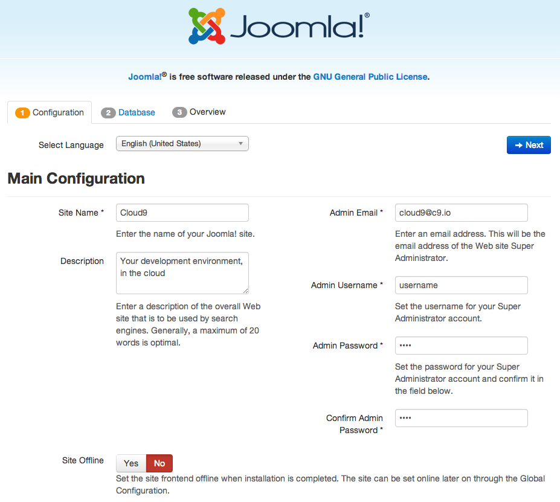

Joomla
Joomla is a popular open source CMS. Installing Joomla is very straightforward, but there are just a few quirks to keep in mind, which we describe below.
Note:
all instructions here are based on Joomla v3.x.Download Joomla
- Create a Cloud9 workspace of type "Custom" or "PHP"
Download and Unzip Joomla from the Terminal. You can find the latest version on the Joomla website
wget http://joomlacode.org/gf/download/frsrelease/19665/160049/Joomla_3.3.3-Stable-Full_Package.zip unzip Joomla*.zip rm Joomla*.zip
Start the database
Joomla requires a MySQL database to connect to. MySQL is pre-installed in your workspace, so just execute these commands:
mysql-ctl install
mysql-ctl start... and then note the credentials to use in the configuration of Joomla later on.
Install Joomla
To run the Joomla installer, open index.php and run it with the "Run" (or "Run Project") button at the top of the IDE. Next, click the URL that's displayed in the Run panel, which looks something like https://joomla-c9-username.c9.io/installation/index.php#. This will open up the Preview window with the installer.
Now, here comes the quirky part: the installer will not work properly if it's loaded over HTTPS, as the Cloud9 Preview window does by default. So, in order to make the Joomla installer work, do the following:
- Pop out the Preview by clicking the Popout icon (or copy & load the URL in a browser tab)
- Change the URL from https:// to http:// and load it
Now you should be able you to get through the installer successfully.
Main configuration
The main Configuration screen should look like this:

Enter whatever values you'd like here.
Database
The second quirky and important thing to keep in mind in the Database section, is to use Host Name "0.0.0.0" instead of "localhost".
So use values like shown in the screenshot below:

Finally
Use whatever settings you'd like in the final installation screen, and after it completes, have Joomla remove the Installation folder for safety.
That's it, you're done and your Joomla setup should run fully on Cloud9!